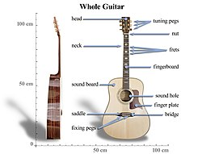
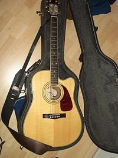
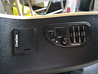
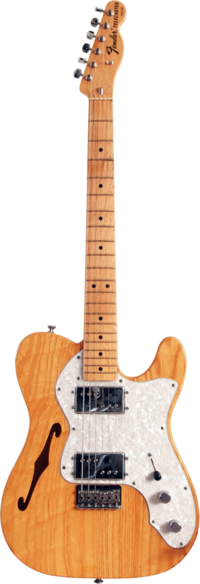

Види гітар |
|
Гіта́ра (ісп. guitarra) — струнний музичний інструмент родини лютень.
Звук створюється вібрацією струн і підсилюється резонатором — декою інструменту.
Гітари поділяються на акустичні, електроакустичні, електричні та напівакустичні.
Крім того гітари розрізняють за кількістю та матеріалом виготовлення струн, будовою корпусу і призначенням.
Гітара використовується як сольний, акомпануючий та ансамблевий інструмент у різних музичних напрямках.
|
|
|  |
Акустична гітара — струнний щипковий музичний інструмент
(у більшості різновидів з шістьма струнами) з сімейства гітар,
звучання якого здійснюється завдяки коливання струн,
яке посилюється за рахунок резонування порожнистого корпусу.
Сучасні акустичні гітари можуть мати вбудовані звукознімачі:
1)магнітні або п'єзоелектричні;
2)з еквалайзером і регулятором гучності.
|
|
| 

|
Електроакустична гітара (англ. electroacoustic guitar) —
струнний музичний інструмент, схожий на
класичну та акустичну гітару та створюючий звуки цих гітар.
Відрізняється тим, що має попередній підсилювач, як і бас- та електрогітари.
Електронний датчик знаходиться під струнами
та перетворює механічні коливання струн в електричні імпульси,
які і посилаються до підсилювача.
Електроакустична гітара складається з таких же частин, як і акустична.
Але, окрім того, ще має звукознімач, передпосиювач
і вихід для підключення гітари (XLR-роз'єм).
Такі гітари користуються популярністю і використовуються тоді,
коли звуку звичайної акустики недостатньо.
|
|
|  |
Електрогітара — електричний музичний інструмент,
різновид гітари з електричними звукознімачами,
що перетворюють коливання металевих струн на коливання електричного струму.
Сигнал зі звукознімачів може бути оброблений для отримання різних звукових ефектів
та підсилений для відтворення через динаміки.
Слово «електрогітара» виникло від словосполучення «електрична гітара».
Потребує додаткового обладнання:
1)Комбопідсилювач — підсилювач та динамік, вмонтовані в один корпус.
Основний елемент створення гітарного звуку;
2)Педаль ефектів — пристрій, що обробляє звук гітари.
Зазвичай один пристрій реалізує один тип ефекту, рідше — два та більше.
Найбільш відомі ефекти:
*Drive — «М'яке» (живе) підсилення, використовується в блюзі.
*Overdrive — моделювання звучання лампового підсилювача з перевантаженим входом.
*Дисторшн — ефект «жорсткого» спотворення,
використовується в рок-музиці і у всіх її напрямах.
3)Процесор — пристрій, що обробляє гітарний звук за допомогою цифрових алгоритмів.
Реалізує кілька типів ефектів з можливістю їх комбінування.
|
| щоб дізнатись ще більше інформації про гітари, переходьте за посиланням.
|